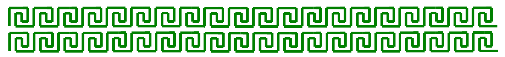
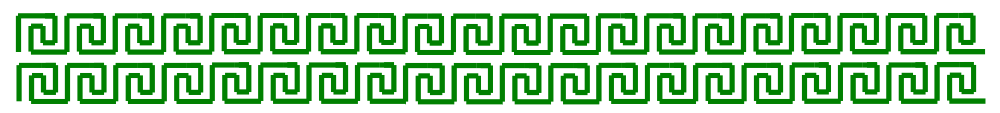

03 FUNDAMENTAL UX & UI / Go to site
The case in this theme was to design and develop a topic site of your choice. I chose to try my hand at designing my own private portfolio. It should be noted that the prototype I submitted in this course is one that I have continued to work on throughout the semester as my skills and knowledge in design and coding have evolved.
Theme 03, UX/UI, fundamentally revolved around the process of designing a website, more specifically designing and coding an experience based on research, user tests, and idea/concept development.
I executed the task based on the qualitative data I collected during the ideation and execution of my site. The data I obtained from conducting UX research yielded the following result: users could understand the purpose of my site but felt that it lacked headers and local elements to make the site more user-friendly and clear. This prompted me to implement more titles and add more subpages to my menu to keep the different pages with their respective content clearly separated.
The theme also taught us about the conventions that are important to remember when designing a UI. I implemented this learning by emphasizing global elements such as the logo and burger menu, and local elements such as buttons, headers, and links.
The task was about recognizing that an idea, a design, or a feature may have a meaning for oneself, but a drastically different one for the user - depending on how they use this feature/site and why they use it.
We use user research to collect qualitative and quantitative data that we can then use to justify our choices/develop our site and/or feature off of. The user's experience is the cornerstone of any site's foundation, as it can have a significant impact on whether the user gets what they came for.
During the work on my site, I quickly found through my desk research that similar portfolios in the same industry have very raw and minimalist designs. That's what I initially tried to design for my site. The grey site is the first draft, the green one is the final project.
When I conducted tests such as 5-second tests, BERT tests, etc., and received feedback on the theme, I found out that users' interest in the site quickly waned due to a lack of engagement - the site was simply too boring. Therefore, in my spare time, I allowed myself to redesign the site with more pages and a completely new Matrix design. I used Javascript to design an animated letter rain, changed the logo and layout so that the site became more user-friendly and at the same time more consistent overall.
I adopted a content strategy that the site should have very little copy and microcopy, but rather local ornaments such as images, graphics, and videos to showcase my work and the content of the portfolio. Thus, you could say that I delved deeper into the UI part of the project based on the data that the UX part provided me.

 


